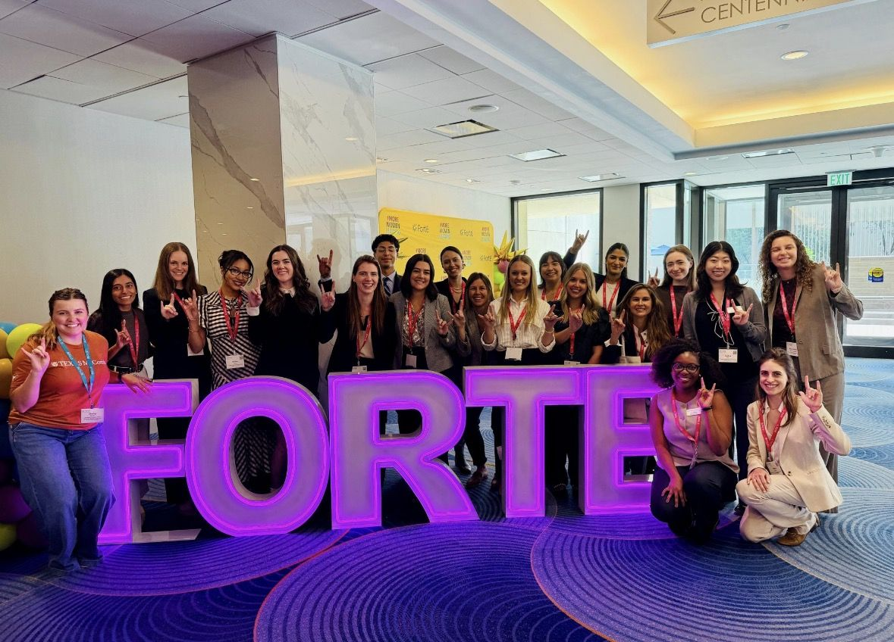
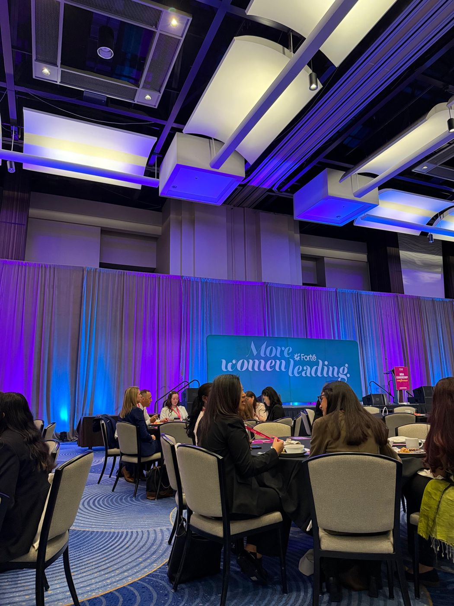
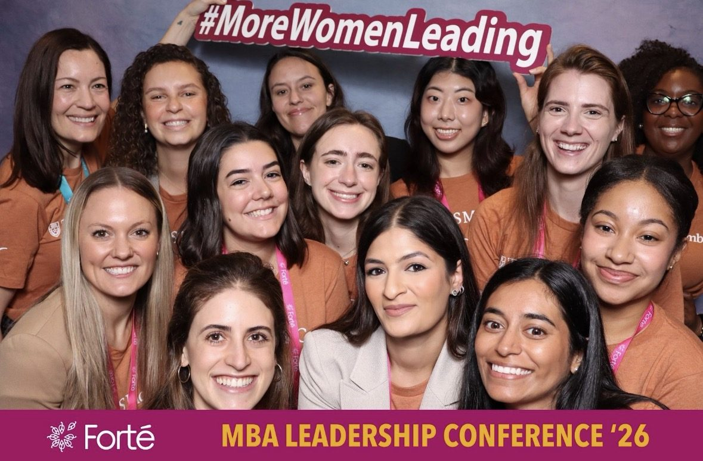

Before my first MBA class, I spent two days in a ballroom in Atlanta with 600+ other incoming MBA students.
As a Forté Fellow, I attended the Forté MBA Leadership Conference in June, a two-day event for incoming MBA students at Forté member schools. Day one was about exploring careers. Day two was a professional development day focused on the skills that carry you through recruiting and beyond.
Meeting my class early

The McCombs group showed up in matching burnt-orange shirts, and it was the first time many of us were in the same room. By the time we got to Austin for orientation, I already had familiar faces, and a group of women I knew I could lean on through recruiting.Day one: seeing what's possible
Friday was about exploring careers, and I used it to test my assumptions about where an MBA could take me. I went to three panels.
Marketing and Brand Management was the obvious pick for me. The panel had marketing leaders from Amazon, TD Bank, and American Airlines, moderated by a marketer from Boston Scientific. Seeing brand managers from e-commerce, banking, airlines, and medical devices on one stage showed me how well those skills carry across industries.
Technology had panelists from PwC, Dell Technologies, and ZS, moderated by someone from Meta. Two of the four came from consulting firms, which was a useful reminder that you can build a tech career from the outside in.
Beyond the Familiar: Exploring Differentiated MBA Career Paths was the one I picked to stretch myself. The panelists worked in strategy at Teach For America, commercial real estate at Trammell Crow, and franchise strategy at Sony Interactive Entertainment. I wouldn't have pictured any of those as MBA paths before that session.
Day two: building the skills

Saturday started with a plenary on recruiting in the age of AI: how it's changing the way companies hire and candidates get hired, how to stand out in an AI-assisted search, and which skills matter most as it evolves. None of us had started recruiting yet, so the timing was good. The rest of the day was hands-on, with workshops on negotiation, the nuance of networking, executive presence, and preparing for MBA interviews.The highlight for me was the alumni table talks, where Forté MBA alumnae led small-group conversations. Our table was led by a Darden MBA alumna whose career has moved from Capital One to PwC's New Ventures incubator to product leadership at Amazon, and back to Capital One in enterprise data. She answered every question honestly and made mentorship feel like something to start now.

What I carried into McCombs
I left Atlanta with new friends, a clearer map of MBA career paths, and two books on my reading list: Runnin' Down a Dream by Bill Gurley and Good to Great by Jim Collins.